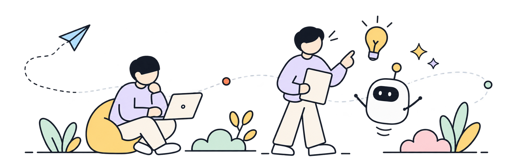
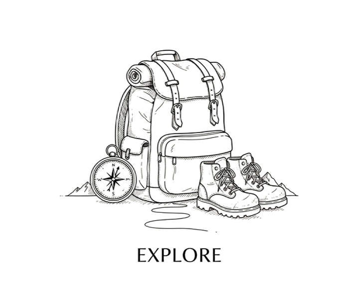
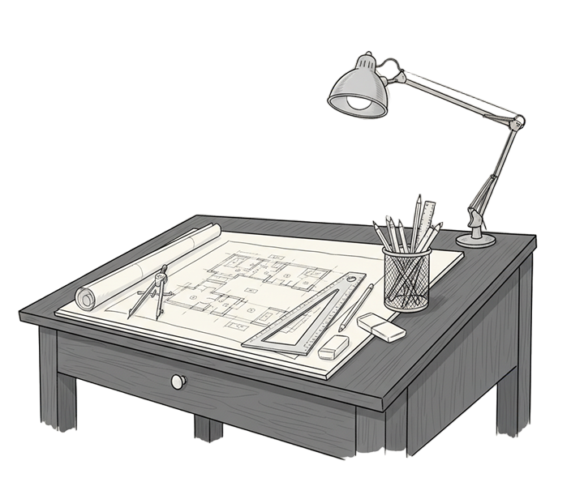
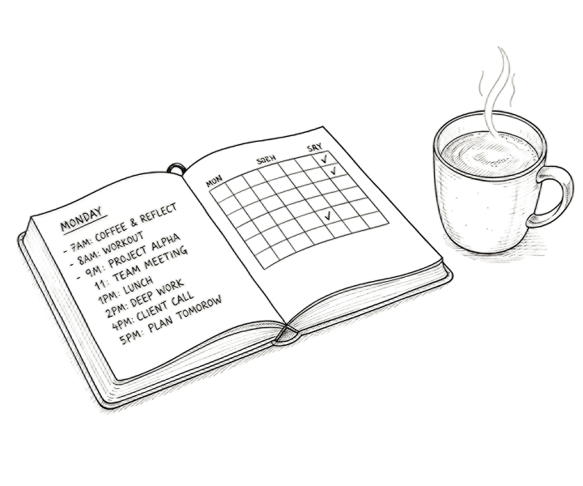
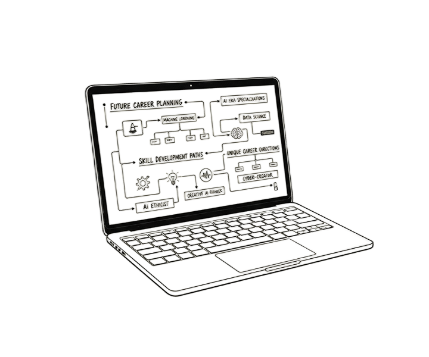

AI 推荐适合你的岗位
基于你的背景和兴趣，智能推荐值得优先体验的岗位。
AI Career Explorer
通过真实的工作微任务，发现更适合你的 AI 职业方向。
不急着做决定，先走一段看看。

有时候我们缺少的不是更多岗位名称，而是一次真正接近工作的体验。
先做几个真实任务，再看哪条路更适合你。通过真实的工作微任务，发现更适合你的 AI 职业方向。
基于你的背景和兴趣，智能推荐值得优先体验的岗位。
从热门 AI 岗位中自由选择，开始任务体验。
这些信息将帮助我们更好地为你推荐岗位。
选择你积累过的经历，并补充一些说明。
你的偏好将帮助我们判断推荐的初始方向。
正在匹配最适合你的岗位方向
0%三条值得优先验证的 AI 职业路径，也可以继续查看其他岗位。
该岗位微任务仍在完善中，可先浏览岗位介绍或体验已开放岗位。
任务 1 / 6 · 情境选择题
正在基于你的回答，评估岗位匹配与能力表现。
0%较适合从产品视角进入 AI 行业。你的表现说明你具备一定的岗位适配潜力，但在优先级判断上仍可进一步加强。
我的情况由个人信息 + 任务表现综合生成
继续探索：继续体验其他 AI 岗位，比较你在不同岗位中的表现差异。
每一步探索，都是通往理想职业的成长印记

进入清华大学美术学院，开始探索艺术与技术间的融合

挑战用户需求模型拆解微任务，展现逻辑与产品思维

分析裂变传播与数据流失微任务，掌握精细化用户策略

发现兴趣锚点，锁定 AI 时代最适合你的独创职业方向
把好奇心变成下一步行动